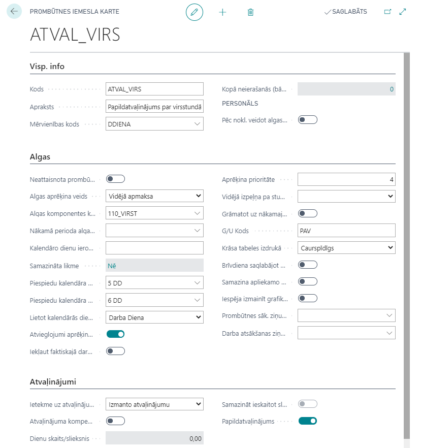
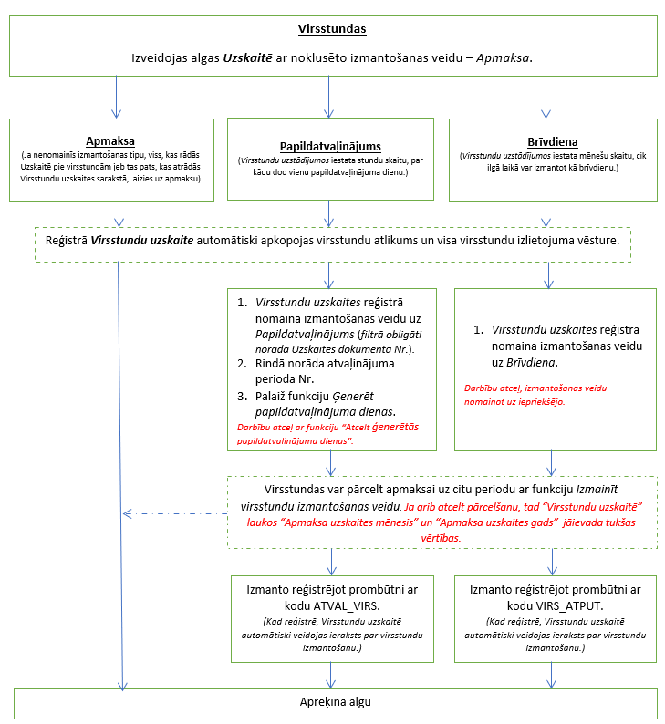

Virsstundu kompensācija ar atpūtas laiku
Uzstādījumi
Lai varētu lietot funkcionalitāti, nepieciešami sekojoši uzstādījumi:
- Prombūtnes iemesla karte un algas komponente atpūtas dienām:

- Prombūtnes karte un algas komponente atvaļinājuma papildus dienām

- Virsstundu uzstādījumos aizpilda sekojošus laukus:
- Izmantošanas veids pēc noklusējuma - Apmaksa, Brīvdiena, Atvaļinājuma papilddiena.
- Prombūtnes kods brīvdienu izmantošanai - Norāda kodu “VIRS_ATPUT”.
- Mēnešu skaits brīvdienu izmantošanai - Norāda cik mēnešus atpakaļ vajag meklēt pieejamas virsstundas, kuras izmantos kā brīvdienu.
- Stundu sk. dienā atvaļin. Papilddienai - Norāda virsstundu skaitu lai piešķirt darbiniekam vienu atvaļinājuma papilddienu.
Virsstundu reģistrācija
Uzskaites logā veicot procesu Aprēķināt virsstundas, automātiski aizpildās arī saraksts Virsstundu uzskaite. Gadījumā, ja uzskaites Mēneša virsstundas vērtība tika izmainīta uz 0 vai tiks izdzēsta rinda no Uzskaites, tad tiks dzēsts atbilstošais ieraksts no Virsstundu uzskaite.
Jāņem vērā ka Uzskaites Mēneša virsstundas vērtībā būs iekļauti gan aprēķinātās virsstundas, gan pārnestas apmaksai no citiem mēnešiem virsstundu skaits.
Saraksts Virsstundu uzskaite pieejams no Uzskaites loga rīkjoslas vai sistēmas meklētājā. Virsstundu uzskaite satur sekojošus laukus:
- Uzskaites dokumenta Nr. - Uzskaites dokumenta Nr. , kurā darbiniekam ir aprēķinātas virsstundas.
- Darbinieka Nr. - Darbinieka Nr.
- Izmantošanas veids - Virsstundu izmantošanas veids (Apmaksa, Brīvdiena, Atvaļinājuma papilddiena). Gadījumā kad virsstundas izmantošana sadalīta uz vairākiem variantiem (piem. apmaksa + brīvdiena, apmaksa + atvaļ. papildiena), tad laukā būs pēdējais virsstundu izmantošanas veids. Ierakstiem piešķiras noklusētais tips no Virsstundu uzstādījumiem.
- Atvaļinājuma perioda Nr. - Atvaļinājuma perioda Nr. , kurā tiks piešķirta atvaļinājuma papilddiena.
- Aprēķina uzskaites mēnesis - Konkrētā Uzskaites dokumenta Nr. mēnesis.
- Aprēķina uzskaites gads - Konkrētā Uzskaites dokumenta Nr. gads.
- Uzskaites darbinieka virsstundas - Vērtība no konkrēta Uzskaites dokumenta Nr. lauka Mēneša virsstundas.
- Izmantotas virsstundas - Tabulas Virsstundu izmantošana (sk. zemāk) ierakstu kopēja vērtība ar filtru uz konkrētu Uzskaites dokumenta Nr. un Darbinieka Nr.
- Apmaksas uzskaites mēnesis - Mēnesis, uz kuru tiek pārnesta atlikušas virsstundas apmaksa.
- Apmaksas uzskaites gads - Mēnesis, uz kuru tiek pārnesta atlikušas virsstundas apmaksa.
- Pārvietotas stundas - Uz citu mēnesi apmaksai pārvietojams virsstundu skaits.
Virsstundu izmantošana

Virsstundu apmaksa
Algas sarakstā virsstundu aprēķins notiek tikai tiem darbiniekiem, kam atbilstoša periodā Virsstundu uzskaitē izmantošanas tips ir Apmaksa. Algas sarakstā darbinieka apmaksāta virsstundu skaits sakrīt ar Atlikušas virsstundas vērtību no tabulas Virsstundu uzskaite un ar Uzskaites Mēneša virsstundas vērtību. Virsstundu izmantošanas reģistrs sastāv no sekojošiem laukiem:
- Uzskaites dokumenta Nr. - Uzskaites dokumenta Nr. , kurā darbiniekam ir aprēķinātas virsstundas.
- Darbinieka Nr. - Darbinieka numurs.
- Ieraksta Nr. - Sistēmas automātiski piešķirtais numurs.
- Izmantošanas veids - Apmaksa, Brīvdiena, Atvaļinājuma papilddiena.
- Izmantotas virsstundas - Izmantoto virsstundu skaits.
- Avota tabulas ID / Avota tabulas nosaukums - Izmantoto virsstundu avota tabulas identifikācija.
- Primārā atslēga - Izmantoto virsstundu avota primārā atslēga, lai varētu caur šo lauku pārslēgties uz dokumentu, kurā tiek izmantotās virsstundas.
- Ieraksta datums un laiks - Ieraksta datums un laiks, kad ieraksts tika izveidots.
- Ieraksta lietotāja ID - Ieraksta lietotāja ID, kurš izveidoja ierakstu.
- Uzskaites mēnesis / Uzskaites gads - Mēnesis/ gads konkrētajam Uzskaites dokumenta Nr.
Virsstundu kompensēšana ar atvaļinājuma papildus dienām
Ja darbinieks vēlas tekoša mēneša virsstundas izmantot nākotnē kā atvaļinājuma papilddienu, tad pirms algas aprēķina darbiniekam Virsstundu uzskaitē atbilstošam ierakstam jāizmaina izmantošanas veids uz Atvaļ.papilddiena. Izmainīt izmantošanas veidu uz Atvaļinājuma papilddienu var ar funkciju Izmainīt virsstundu izmantošanas veidu. Funkcijas filtrā obligāti jānorāda uzskaites dokumenta Nr., kuram jāizmaina izmantošanas veids.
Papildatvaļinājuma dienu piešķiršana notiek Virsstundu uzskaites tabulā ar secību:
- rindai (-ām) ar izmantošanas veidu Atvaļinājuma papilddiena jānorāda darbinieka atvaļinājuma perioda Nr., kurā jāizveido ieraksts par papildatvaļinājuma piešķiršanu.
- cilnē Darbības palaist funkciju Ģenerēt papildus atvaļinājuma dienas.
Atvaļinājuma periodos ierakstu par virsstundām piešķirto papildatvaļinājumu var atcelt tikai no Virsstundu uzskaites tabulas ar funkciju Atcelt ģenerētas papildatvaļinājuma dienas.
Pēc papilddienas ģenerēšanas tiks automātiski izveidoti:
- ieraksts par virsstundu izmantošanu;
- ieraksts par papildatvaļinājuma dienas piešķiršanu noradītā Atvaļinājuma periodā.
Pēc papildatvaļinājuma piešķiršanas Atvaļinājuma periodā, darbiniekam var iegrāmatot personāla rīkojumu par papildus atvaļinājuma prombūtni.
Virsstundu kompensēšana ar apmaksātām atpūtas dienām
Ja darbinieks vēlas tekoša mēneša virsstundas izmantot nākotnē kā brīvdienu atpūtai, tad pirms algas aprēķina darbiniekam Virsstundu uzskaitē atbilstošam ierakstam jāizmaina izmantošanas veids uz Brīvdiena.
Izmainīt izmantošanas veidu uz Brīvdienu var arī ar funkciju Izmainīt virsstundu izmantošanas veidu. Funkcijas filtrā obligāti jānorāda uzskaites dokumenta Nr., kuram jāmaina izmantošanas veidu.
Virsstundu izmantošanas veidu var koriģēt tieši no Uzskaites, izmantojot rindas pogu Virsstundu uzskaite.
Brīvdienas piešķiršana notiek ar personāla rīkojuma grāmatošanu vai prombūtnes reģistrāciju žurnālā caur ierakstu ar prombūtnes iemesla kodu VIRS_ATPUT (aprakstīts virsstundu Uzstādījumu nodaļā).
Pēc personāla rīkojuma grāmatošanas vai prombūtnes reģistrācijas, automātiski veidojas ieraksts par virsstundu izmantošanu.
Apmaksa par brīvdienu būs aprēķināta algas sarakstā, kas sakrīt ar prombūtnes norādīto aprēķina gadu un mēnesi.
Virsstundu pārcelšana uz citu periodu
Ir iespējams viena perioda atlikušās virsstundas pārcelt uz citu periodu. Virsstundu pārcelšana notiek ar Virsstundu uzskaite funkciju Izmainīt Virsstundu izmantošanas veidu. Obligāti filtrā jānorāda uzskaites dokumenta Nr., no kura pārceļ virsstundas. Pirms virsstundu pārcelšanas darbiniekam obligāti jābūt izveidotai uzskaitei par periodu, uz kuru plānots pārnest virsstundas.
Virsstundu pārcelšanas rezultāts:
- Izmantošanas veids periodā, no kura pārceltās virsstundas, izmainīts uz vērtību, kas bija piemērota pārcelšanas funkcijas logā.
- Atlikušas virsstundas periodā, no kura pārceltās virsstundas, ir 0
- Uzskaites darbinieka virsstundas periodā, uz kuru pārceltās virsstundas, palielinātas par pārcelto stundu skaitu.
- Pārcelšana piefiksēta speciālajos pārvietoto stundu laukos.
Jāņem vēra ka pārceltās virsstundas ar izmantošanas tipu Apmaksa būs pievienotas uzskaitē pie Mēneša virsstundām. Rekomendējam veikt virsstundu pārcelšanu pēdējā solī (pirms Virsstundu aprēķināšanas), kad uzskaite ir korekta un nav vairs plānots mainīt datus.
Gadījumā, ja darbinieks būs izdzēsts no uzskaites, veiktā virsstundu pārcelšana tiks anulēta - virsstundu uzskaites dati atgriezīsies uz virsstundu atlikumu, kas bija līdz pārcelšanai. Gadījumā, ja jāatceļ virsstundas pārcelšanas operācija, tad Virsstundu uzskaitē laukos Apmaksa uzskaites mēnesis un Apmaksa uzskaites gads jāievada tukšas vērtības.